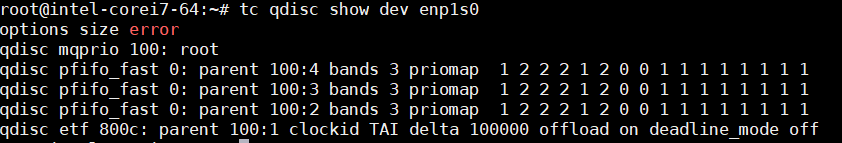
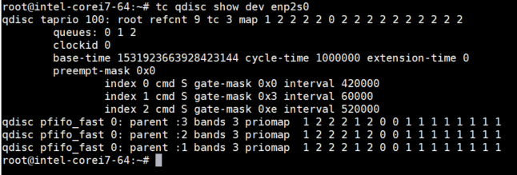
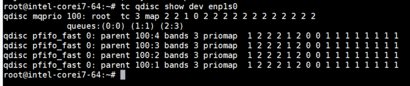

Queueing discipline, or qdisc, is used when the kernel needs to send a packet to an interface. It is enqueued to the qdisc configured for that interface. Immediately afterward, the kernel tries to get as many packets as possible from the qdisc to the network adapter driver.
A simple QDISC is 'pfifo', which does no processing at all and is a pure first-in, first-out queue. It does however store traffic when the network interface cannot handle it.
TSN uses the following qdiscs:
| QDISC | Description |
|---|---|
| CBS | This is a simple rate-limiting shaper aimed at TSN applications on systems with known traffic workloads. Its primary use is to apply bandwidth reservation to user-defined traffic classes, which are mapped to different queues via the mqprio qdisc.
Refer to CBS documentation to learn more about this qdisc. |
| MQPRIO | The MQPRIO qdisc is a simple queuing discipline that allows mapping traffic flows to hardware queue ranges using priorities and a configurable priority to traffic class mapping.
Refer to MQPRIO documentation to learn more about this qdisc. |
| TAPRIO | This scheduler allows the network admin to configure schedules for classes of traffic. This qdisc borrows a few concepts from mqprio and most of the parameters are like mqprio.
Refer to TAPRIO documentation to learn more about this qdisc. |
| ETF | The ETF qdisc is used to schedule traffic transmission based on absolute time. For some workloads, just bandwidth enforcement is not enough and precise control of the transmission of packets is necessary.
Refer to ETF documentation to learn more about this qdisc. |
Note
This note covers a brief description of queue mapping that will aid in understanding subsequent QDISC enablement commands. In enablement commands, queue mapping is denoted as: queues 1@0 1@1 2@2. This positional argument refers to X@Y, counts @ offset of each traffic class. This example includes three TC: TC0, TC1, and TC2. Correspondingly, there are three sets of X@Y that map TC into TxQ as listed:- TC0 has 1@0 where count=1 at offset=0. This means, TC0 has TQ at offset=0, that isTxQ0.
- TC1 has 1@1 where count =1 at offset =0. This means TC1 has TxQ at offset=1, that is TxQ1.
- TC2 has 2@2 where count=2 at offset=2. This means TC2 has 2 TxQs at offset=2, TxQ2 then TxQ3.
Remember also that TC and TxQ mapping cannot overlap.
Sample ETF Enablement Commands
- Running the mqprio command is required before adding the etf qdisc to set up the priorities to the Tx queues mapping. In the following command:
- There are 3 traffic classes (num_tc 3)
- The SO_PRIORITY value 3 maps to TC 0, while value 2 maps to TC 1
- Everything else maps to the other (best-effort) traffic classes
"queues 1@0 1@1 2@2" is a positional argument, that means TC 0 maps to queue 0, TC 1 maps to queue 1 and TC 2 maps to queues 2 and 3
tc qdisc replace dev enp1s0 parent root handle 100 mqprio num_tc 3 map 2 2 1 0 2 2 2 2 2 2 2 2 2 2 2 2 queues 1@0 1@1 2@2 hw 0
- In the following command:
- delta is configurable time in nanoseconds that the ETF qdisc keeps the transmit packets in its buffer before transmission time
- clockid is the clock type to use as reference
tc qdisc add dev enp1s0 parent 100:1 etf delta 100000 clockid CLOCK_TAI offload - Use the following command to verify the qdisc is loaded:
tc qdisc show dev enp1s0

Sample TAPRIO Enablement Commands
- Prepare a schedule file for taprio
--gates.sched-- S 0x1 300000 S 0x2 300000 S 0xc 400000The format of each line is <CMD> <GATE MASK> <INTERVAL> - In the following command:
- There are 3 traffic classes (num_tc 3)
- SO_PRIORITY value 3 maps to TC 0, while value 2 maps to TC 1
- Everything else maps to the other (best-effort) traffic classes
- "queues 0 1 2 2" is a positional argument, meaning that TC 0 maps to queue 0, TC 1 maps to queue 1 and TC 2 maps to queues 2 and 3
- gates.sched is used as schedule file
- base time is set
- the reference clock is CLOCK_TAI
tc qdisc add dev enp1s0 parent root handle 100 taprio num_tc 3 map 2 2 1 0 2 2 2 2 2 2 2 2 2 2 2 2 queues 0 1 2 2 sched-file gates.sched base-time 1234567890123456789 clockid CLOCK_TAI
- Use the following command to verify the qdisc is loaded:
tc qdisc show dev enp1s0

Sample CBS Enablement Commands
- Running mqprio is required before adding the cbs qdisc to set up the priorities to the Tx queues mapping. In the following command:
- There are 3 traffic classes (num_tc 3)
- SO_PRIORITY value 3 maps to TC 0, while value 2 maps to TC 1
- Everything else maps to the other (best-effort) traffic classes
- "queues 0 1 2 2" is a positional argument, meaning that TC 0 maps to queue 0, TC 1 maps to queue 1 and TC 2 maps to queues 2 and 3
- Hardware offloading is enabled (hw 0)
tc qdisc replace dev enp1s0 handle 100: parent root mqprio num_tc 3 map 2 2 1 0 2 2 2 2 2 2 2 2 2 2 2 2 queues 1@0 1@1 2@2 hw 0
- In the following command:
- locredit is the minimum credit that can be reached
- hicredit is the maximum credit
- sendslope is the rate of credit that is depleted; typically should be negative
- idleslope is the rate of credit that is accumulated when there is at least one packet waiting for transmission
tc qdisc add dev enp1s0 parent 100:1 cbs locredit -1470 hicredit 30 sendslope -980000 idleslope 20000
- Use the following command to verify the qdisc is loaded:
tc qdisc show dev enp1s0

Sample MQPRIO Enablement Commands
- In the following command:
- There are 3 traffic classes (num_tc 3)
- SO_PRIORITY value 3 maps to TC 0, while value 2 maps to TC 1
- Everything else maps to the other (best-effort) traffic classes
- "queues 0 1 2 2" is a positional argument, meaning that TC 0 maps to queue 0, TC 1 maps to queue 1 and TC 2 maps to queues 2 and 3
- Hardware offloading is enabled (hw 0)
tc qdisc replace dev enp1s0 parent root handle 100 mqprio num_tc 3 map 2 2 1 0 2 2 2 2 2 2 2 2 2 2 2 2 queues 1@0 1@1 2@2 hw 0
- Use the following command to verify the qdisc is loaded:
tc qdisc show dev enp1s0
